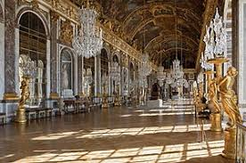

French Landmarks
The Louvre
The crowded courtyard of the Louvre Museum. Photo from
Louvre Official Site.
Versailles

An opulent hall in Versailles, decorated with gold statues. Photo from
Wikipedia.